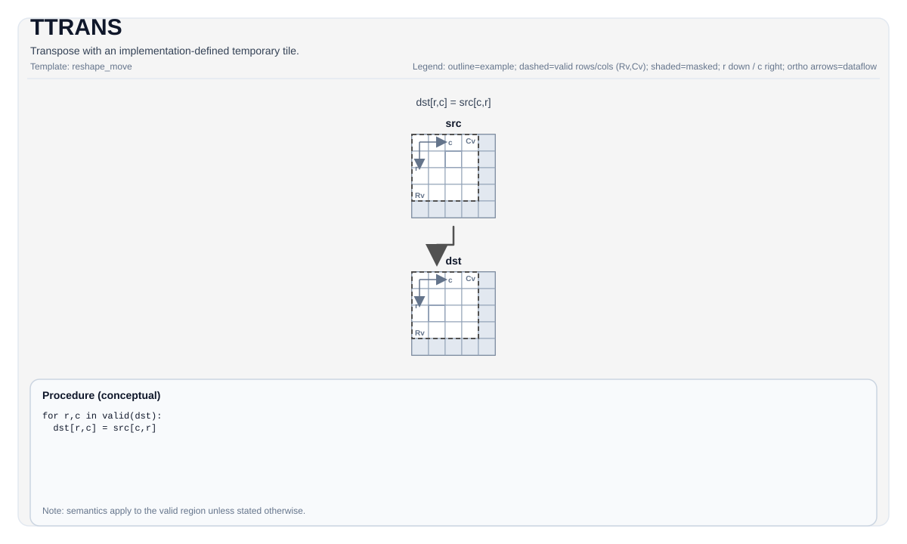

TTRANS¶
指令示意图¶

简介¶
使用实现定义的临时Tile进行转置。
数学语义¶
对于二维Tile，在有效转置域上：
\[ \mathrm{dst}_{i,j} = \mathrm{src}_{j,i} \]
确切的形状/布局及转置域取决于目标硬件（参见约束）。
汇编语法¶
同步形式：
%dst = ttrans %src : !pto.tile<...> -> !pto.tile<...>编译器降级（Lowering）阶段可能引入内部临时Tile；C++内建接口需要显式传入 tmp 操作数。
AS Level 1（SSA）¶
%dst = pto.ttrans %src : !pto.tile<...> -> !pto.tile<...>AS Level 2（DPS）¶
pto.ttrans ins(%src : !pto.tile_buf<...>) outs(%dst : !pto.tile_buf<...>)C++内建接口¶
声明于 include/pto/common/pto_instr.hpp：
公共包含头为
<pto/pto-inst.hpp>，内部声明位于pto/common/pto_instr.hpp。
template <typename TileDataDst, typename TileDataSrc, typename TileDataTmp, typename... WaitEvents>
PTO_INST RecordEvent TTRANS(TileDataDst &dst, TileDataSrc &src, TileDataTmp &tmp, WaitEvents &... events);约束¶
- 实现检查 （Atlas A2/A3 训练系列产品/Atlas A2/A3 推理系列产品）:
sizeof(TileDataSrc::DType) == sizeof(TileDataDst::DType)。- 源布局必须是行主序（
TileDataSrc::isRowMajor）。 - 元素大小必须是
1、2或4字节。 - 支持的元素类型按元素宽度限制如下：
- 4字节：
uint32_t、int32_t、float - 2字节：
uint16_t、int16_t、half、bfloat16_t - 1字节：
uint8_t、int8_t - 转置大小取自
src.GetValidRow()/src.GetValidCol()。
- 实现检查 (Ascend 950PR/Ascend 950DT):
sizeof(TileDataSrc::DType) == sizeof(TileDataDst::DType)。- 对输入和输出的主维度强制执行32字节对齐约束（行主序检查
Cols * sizeof(T) % 32 == 0，列主序检查Rows * sizeof(T) % 32 == 0）。 - 支持的元素类型按元素宽度限制如下：
- 4字节：
uint32_t、int32_t、float - 2字节：
uint16_t、int16_t、half、bfloat16_t - 1字节：
uint8_t、int8_t - 转置大小取自
src.GetValidRow()/src.GetValidCol()。
- 临时Tile:
- C++ API需要
tmp，需要的tmp空间大小计算公式如下： - 基础参数:
- RowStride: b8类型为32，b16/b32类型为16（对应Y_ELEM_B8和Y_ELEM_OTHER）
- ElemPerBlock: 32/sizeof(T)，即每个32字节块的元素数量
- 其中b8为uint8_t/int8_t，b16为uint16_t/int16_t/half/bfloat16_t，b32为uint32_t/int32_t/float
- 对齐条件:
- 当stride满足对齐要求（dstStride % RowStride == 0, srcStride % ElemPerBlock == 0, srcStride/ElemPerBlock <= 255）时，使用tmp进行高效转置；否则使用scalar copy，不需要tmp。
- 二维Tile转置 [H, W] -> [W, H]: $$ \text{tmpSize} = W \times \lceil\frac{H}{\text{RowStride}}\rceil \times \text{RowStride} \times \text{sizeof(DType)} $$ 其中W为列数（validCol），H为行数（validRow）。tmpStride需要对齐到RowStride。仅当stride满足对齐条件时需要tmp。
- NCHW <-> NC1HWC0双向转换:
- 正向 [N, C, H, W] -> [N, C1, H, W, C0]: $$ \text{tmpSize} = H \times W \times \lceil\frac{C0}{\text{RowStride}}\rceil \times \text{RowStride} \times \text{sizeof(DType)} $$ 其中C1 = (C + C0 - 1) / C0，转置域为C0行、H*W列。
- 反向 [N, C1, H, W, C0] -> [N, C, H, W]: $$ \text{tmpSize} = C0 \times \lceil\frac{H \times W}{\text{RowStride}}\rceil \times \text{RowStride} \times \text{sizeof(DType)} $$ 转置域为H*W行、C0列。
- GNCHW <-> GNC1HWC0双向转换:
- 正向 [G, N, C, H, W] -> [G, N, C1, H, W, C0]: $$ \text{tmpSize} = H \times W \times \lceil\frac{C0}{\text{RowStride}}\rceil \times \text{RowStride} \times \text{sizeof(DType)} $$ 其中C1 = (C + C0 - 1) / C0，转置域为C0行、H*W列。
- 反向 [G, N, C1, H, W, C0] -> [G, N, C, H, W]: $$ \text{tmpSize} = C0 \times \lceil\frac{H \times W}{\text{RowStride}}\rceil \times \text{RowStride} \times \text{sizeof(DType)} $$ 转置域为H*W行、C0列。
- NC1HWC0 -> FRACTAL_Z和GNC1HWC0 -> FRACTAL_Z:
- 这两种转换不需要tmp空间，直接执行内存重排操作。
- NCDHW到Fractal_Z_3D [N, C, D, H, W] -> [D, C1, H, W, N1, N0, C0]: $$ \text{tmpSize} = (N \times C1 \times C0 \times H \times W + \max(N \times C1 \times C0 \times H \times W, H \times W \times \lceil\frac{C0}{\text{RowStride}}\rceil \times \text{RowStride})) \times \text{sizeof(DType)} $$ 其中C1 = (C + C0 - 1) / C0，N1 = (N + N0 - 1) / N0。RowStride对于8-bit数据为32，对于16/32-bit数据为16。该转换分两阶段且有不同的执行路径：第一阶段提取NCDHW的d平面转为NCHW格式（需要NC1C0HW空间作为planePtr），第二阶段要么将结果写入secondPtr（需要NC1C0HW），要么使用secondPtr作为转置的tmp（需要HWceil(C0/RowStride)*RowStride）。由于路径在运行时选择，secondPtr需要两者的最大值。
- C++ API需要
- ConvTile:
- 支持在
TileType::Vec上的ConvTile的格式转换。其元素大小必须是1、2或4字节。元素类型限制为uint32_t、int32_t、float、uint16_t、int16_t、half、bfloat16_t、uint8_t、int8_t。 - 支持ConvTile从
NCHW到NC1HWC0的变换，其中C1 == (C + C0 - 1)/C0，HW满足对齐要求，即H*W*sizeof(T)%32==0。 C0对应c0_size， 即C0 * sizeof(T) == 32。C0也可以为4。 - 支持ConvTile从
NC1HWC0到FRACTAL_Z的变换， 其中N1 == (N + N0 - 1)/N0。N0为16。 - 支持ConvTile从
NCDHW到FRACTAL_Z_3D的变换，目标形状为[D * C1 * H * W, N1, N0, C0]，其中C1 == (C + C0 - 1)/C0，N1 == (N + N0 - 1)/N0。N0为16。C0取决于元素宽度：4-bit数据为64，8-bit数据为32，16-bit数据为16，32-bit数据为8。临时Tile大小计算公式见上方临时Tile章节。
- 支持在
示例¶
自动（Auto）¶
#include <pto/pto-inst.hpp>
using namespace pto;
void example_auto() {
using SrcT = Tile<TileType::Vec, float, 16, 16>;
using DstT = Tile<TileType::Vec, float, 16, 16>;
using TmpT = Tile<TileType::Vec, float, 16, 16>;
SrcT src;
DstT dst;
TmpT tmp;
TTRANS(dst, src, tmp);
}手动（Manual）¶
#include <pto/pto-inst.hpp>
using namespace pto;
void example_manual() {
using SrcT = Tile<TileType::Vec, float, 16, 16>;
using DstT = Tile<TileType::Vec, float, 16, 16>;
using TmpT = Tile<TileType::Vec, float, 16, 16>;
SrcT src;
DstT dst;
TmpT tmp;
TASSIGN(src, 0x1000);
TASSIGN(dst, 0x2000);
TASSIGN(tmp, 0x3000);
TTRANS(dst, src, tmp);
}汇编示例（ASM）¶
自动模式¶
# 自动模式：由编译器/运行时负责资源放置与调度。
%dst = pto.ttrans %src : !pto.tile<...> -> !pto.tile<...>手动模式¶
# 手动模式：先显式绑定资源，再发射指令。
# 可选（当该指令包含 tile 操作数时）：
# pto.tassign %arg0, @tile(0x1000)
# pto.tassign %arg1, @tile(0x2000)
%dst = pto.ttrans %src : !pto.tile<...> -> !pto.tile<...>PTO汇编形式¶
%dst = ttrans %src : !pto.tile<...> -> !pto.tile<...>
# AS Level 2 (DPS)
pto.ttrans ins(%src : !pto.tile_buf<...>) outs(%dst : !pto.tile_buf<...>)